日本の世界遺産
WORLD HERITAGE in Japan
姫路城
屋久島
富岡製糸場
世界遺産とは、地球の生成と人類の歴史によって生み出され、過去から現在へと引き継がれてきたかけがえのない宝物です。
現在を生きる世界中の人びとが過去から引継ぎ、未来へと伝えていかなければならない人類共通の遺産です。
世界遺産は、1972年の第17回UNESCO総会で採択された世界遺産条約（正式には『世界の文化遺産及び自然遺産の保護に関する条約』：）
の中で定義されています。2018年12月現在、世界遺産は1092件（文化遺産845件、自然遺産209件、複合遺産38件）、条約締約国は193カ国です。
| 登録年 | 登録名 | 所在地 |
|---|---|---|
| 1993年 | 法隆寺地域の仏教建造物 | 奈良県 |
| 1993年 | 姫路城 | 兵庫県 |
| 1994年 | 古都京都の文化財 | 京都府、滋賀県 |
| 1995年 | 白川郷・五箇山の合掌造り集落 | 岐阜県、富山県 |
| 1996年 | 原爆ドーム | 広島県 |
| 1996年 | 厳島神社 | 広島県 |
| 1998年 | 古都奈良の文化財 | 奈良県 |
| 1999年 | 日光の社寺 | 栃木県 |
| 2000年 | 琉球王国のグスク | 沖縄県 |
| 2004年 | 紀伊山地の霊場と参詣道 | 和歌山県、奈良県、三重県 |
| 2007年 | 石見銀山跡地 | 島根県 |
| 2011年 | 仏国土を表す建築・庭園 | 岩手県 |
| 2013年 | 富士山 | 静岡県、山梨県 |
| 2014年 | 富岡製紙工場 | 群馬県 |
| 2015年 | 明治日本の産業革命遺産 | 山口県、福岡県、佐賀県など |
| 2016年 | ル・コルビュジエの建築作品 | 東京都 |
| 2017年 | 宗像・沖ノ島 | 福岡県 |
| 2018年 | 長崎と天草地方の潜伏キリシタン関連 | 長崎県、熊本県 |
| 2019年 | 百舌鳥、古市古墳群 | 大阪府 |
| 登録年 | 登録名 | 所在地 |
|---|---|---|
| 1993年 | 屋久島 | 鹿児島県 |
| 1993年 | 白神山地 | 青森県、秋田県 |
| 2005年 | 知床 | 北海道 |
| 2011年 | 小笠原諸島 | 東京都 |

原爆ドーム
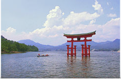
厳島神社
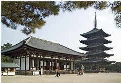
奈良
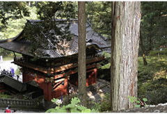
日光
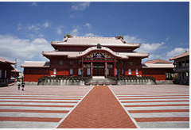
琉球王国のグスク
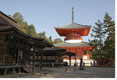
紀伊山地

石見銀山
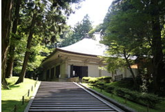
平泉
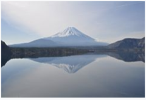
富士山
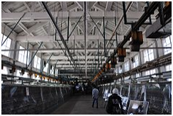
富岡製糸場
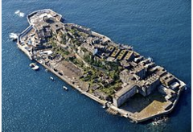
明治産業革命

ル・コルビュジエ
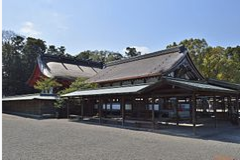
沖の島
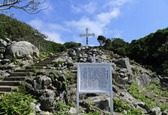
長崎
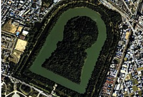
百舌鳥
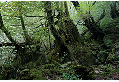
屋久島
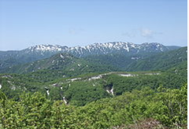
白神山地
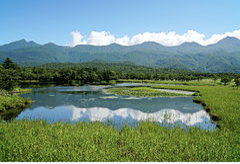
知床
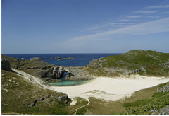
小笠原諸島
法隆寺
姫路城
好きな世界遺産は？
0
0
0
0
0
0
0
0
0
0
0
0
0
0
0
0
0
0
0
0
0
0
0